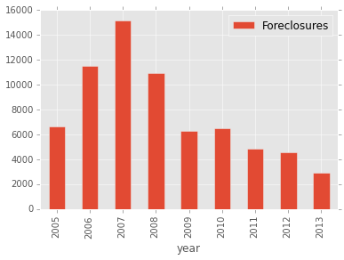
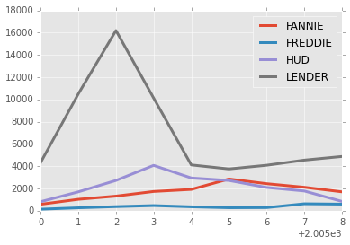
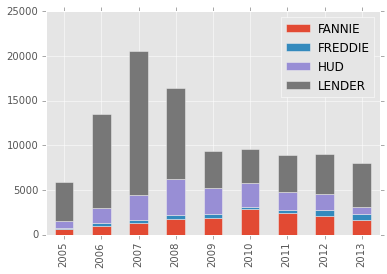
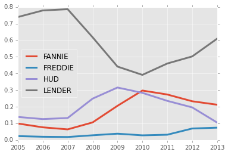

Mon 21 December 2015 | tags: BigData, -- (permalink)
I will here present a brief demonstration of my use of Python for data analysis. While I was trained to use Stata, I moved to Python (and R, to a limited extent) because of my desire for an open source tool. I wanted to be able to perform analysis anytime, anywhere - not just in the computer lab on campus. I was also drawn to Python because of its powerful data wrangling capabilities.
The precipitating event for my full-blown move to Python was my need to create a post-foreclosure pathways dataset for my dissertation. Using real-estate transaction records in hand, I needed to identify which properties went though mortgage foreclosure and which records were REO sales for those properties (and many other things, but these were the two most important data points). I needed to iterate through these records applying regular expressions and keyword searches to sort transfers and other miscellaneous records from the "true" REO sales. I am sure someone could code this in Stata, but I would have needed to move into the computer lab to crack the code. Instead, I could use my laptop - at home, on the bus, anywhere - to wrangle the data to suit my needs.
The more I worked in Python, the more I saw its advantages. I can use Python to seamlessly integrate webscraping, data cleaning, database creating and querying, statistical analysis and mapping! No more jumping between Stata, Excel, and ArcGIS!
I'll show a very brief example of how I access my dissertation database for summary information below.
# First, I need to import the relevant libraries
import pandas as pd # amazing data analysis library! creates DataFrame objects similar to R
import sqlite3 as sql # core library for interacting with sqlite databases
import matplotlib.pyplot as plt # plotting library
import os
plt.style.use('ggplot')
%matplotlib inline
# change directory to source data folder
self = os.path.abspath("__file__") # get current path
(fpath,fname) = os.path.split(self) # split file name from directory
scripts = fpath # set scripts folder as path from line above
print "scripts:", scripts
parent = os.path.abspath("__file__" + "/../../") # get parent path
print "parent:", parent
intermediate = os.path.abspath(parent+"/intermediate")
print "intermediate: ", intermediate
images = os.path.abspath(parent+"/images")
print "images:", images
#change dir
os.chdir(intermediate)
retval = os.getcwd()
scripts: /bigdrive/sync_contents/dissertation/quantitative/scripts
parent: /bigdrive/sync_contents/dissertation/quantitative
intermediate: /bigdrive/sync_contents/dissertation/quantitative/intermediate
images: /bigdrive/sync_contents/dissertation/quantitative/images
# how many completed mortgageg foreclosures per year?
# connect to database
con = sql.connect("dissertation.db")
cur = con.cursor()
# supply SQL query to database and create pandas DataFrame object from result
df = pd.read_sql('''
SELECT year, COUNT(*) AS Foreclosures
FROM reo_pathways
GROUP BY year;
''', con, index_col="year")
con.close()
df
| Foreclosures | |
|---|---|
| year | |
| 2005 | 6665 |
| 2006 | 11518 |
| 2007 | 15160 |
| 2008 | 10934 |
| 2009 | 6274 |
| 2010 | 6493 |
| 2011 | 4864 |
| 2012 | 4530 |
| 2013 | 2922 |
# let's plot these data
df.plot(kind='bar')
<matplotlib.axes._subplots.AxesSubplot at 0x7fbb6469ad90>

# what is the year over year percent change in completed forclosures?
df.pct_change()
| Foreclosures | |
|---|---|
| year | |
| 2005 | NaN |
| 2006 | 0.728132 |
| 2007 | 0.316201 |
| 2008 | -0.278760 |
| 2009 | -0.426194 |
| 2010 | 0.034906 |
| 2011 | -0.250886 |
| 2012 | -0.068668 |
| 2013 | -0.354967 |
# supply the plot() function to the dataframe to visualize the data
# plot can be passed after other functions, like pct_change
df.pct_change().plot(kind='bar')
<matplotlib.axes._subplots.AxesSubplot at 0x7fbb6469a790>

That's a lot of mortgage foreclosures, most of which entered REO inventory, that is, they became bank owned. What were Fannie, Freddie, HUD, and all other lenders' inventories over time? To calculate stocks for a given year, I decided to substract the cumulative total REO acquisitions by the cumulative total REO sales. First, the REO acquisitions...
# create an empty DataFrame with years as rows and entities as columns
df = pd.DataFrame(0, index=range(2005,2014,1), columns=["FANNIE", "FREDDIE", "HUD", "LENDER"])
df
| FANNIE | FREDDIE | HUD | LENDER | |
|---|---|---|---|---|
| 2005 | 0 | 0 | 0 | 0 |
| 2006 | 0 | 0 | 0 | 0 |
| 2007 | 0 | 0 | 0 | 0 |
| 2008 | 0 | 0 | 0 | 0 |
| 2009 | 0 | 0 | 0 | 0 |
| 2010 | 0 | 0 | 0 | 0 |
| 2011 | 0 | 0 | 0 | 0 |
| 2012 | 0 | 0 | 0 | 0 |
| 2013 | 0 | 0 | 0 | 0 |
# iterate through names, search for acquisitions by year using SQL, populate DataFrame
names = df.columns.tolist()
con = sql.connect("dissertation.db")
cur = con.cursor()
for n in names:
cur.execute('''
SELECT year, COUNT(*)
FROM reo_pathways
WHERE reo_owner_category = ?
GROUP BY year;
''', ([n]))
results = cur.fetchall()
for row in results:
year = int(row[0])
count = int(row[1])
df.loc[year][n] = count
df
| FANNIE | FREDDIE | HUD | LENDER | |
|---|---|---|---|---|
| 2005 | 616 | 148 | 821 | 4725 |
| 2006 | 838 | 200 | 1136 | 9032 |
| 2007 | 1110 | 322 | 1284 | 12106 |
| 2008 | 1877 | 600 | 1665 | 6523 |
| 2009 | 1946 | 372 | 1775 | 1892 |
| 2010 | 2758 | 200 | 1738 | 1530 |
| 2011 | 1918 | 212 | 948 | 1591 |
| 2012 | 1431 | 538 | 710 | 1657 |
| 2013 | 776 | 390 | 72 | 1472 |
# I also want the cumulative sum of acquisitions
cum_acq = df.cumsum()
cum_acq
| FANNIE | FREDDIE | HUD | LENDER | |
|---|---|---|---|---|
| 2005 | 616 | 148 | 821 | 4725 |
| 2006 | 1454 | 348 | 1957 | 13757 |
| 2007 | 2564 | 670 | 3241 | 25863 |
| 2008 | 4441 | 1270 | 4906 | 32386 |
| 2009 | 6387 | 1642 | 6681 | 34278 |
| 2010 | 9145 | 1842 | 8419 | 35808 |
| 2011 | 11063 | 2054 | 9367 | 37399 |
| 2012 | 12494 | 2592 | 10077 | 39056 |
| 2013 | 13270 | 2982 | 10149 | 40528 |
# Now for sales...repopulate existing DataFrame
for n in names:
cur.execute('''
SELECT CAST(SUBSTR(reo_sale_date,1,4) AS INTEGER) AS year, COUNT(*)
FROM reo_pathways
WHERE reo_owner_category = ?
AND reo_sale_flag >= 1
GROUP BY SUBSTR(reo_sale_date,1,4);
''', ([n]))
results = cur.fetchall()
for row in results:
year = int(row[0])
count = int(row[1])
df.loc[year][n] = count
df
| FANNIE | FREDDIE | HUD | LENDER | |
|---|---|---|---|---|
| 2005 | 35 | 11 | 8 | 388 |
| 2006 | 393 | 75 | 254 | 2871 |
| 2007 | 824 | 215 | 260 | 6412 |
| 2008 | 1460 | 506 | 311 | 12589 |
| 2009 | 1761 | 482 | 2908 | 7905 |
| 2010 | 1821 | 285 | 1960 | 1889 |
| 2011 | 2341 | 199 | 1577 | 1261 |
| 2012 | 1752 | 195 | 1026 | 1194 |
| 2013 | 1186 | 421 | 1007 | 1145 |
# Let's take the cumulative sum of REO sales
cum_sales = df.cumsum()
cum_sales
| FANNIE | FREDDIE | HUD | LENDER | |
|---|---|---|---|---|
| 2005 | 35 | 11 | 8 | 388 |
| 2006 | 428 | 86 | 262 | 3259 |
| 2007 | 1252 | 301 | 522 | 9671 |
| 2008 | 2712 | 807 | 833 | 22260 |
| 2009 | 4473 | 1289 | 3741 | 30165 |
| 2010 | 6294 | 1574 | 5701 | 32054 |
| 2011 | 8635 | 1773 | 7278 | 33315 |
| 2012 | 10387 | 1968 | 8304 | 34509 |
| 2013 | 11573 | 2389 | 9311 | 35654 |
# Now to take the difference. Simply subtract the two DataFrame objects:
cum_acq - cum_sales
| FANNIE | FREDDIE | HUD | LENDER | |
|---|---|---|---|---|
| 2005 | 581 | 137 | 813 | 4337 |
| 2006 | 1026 | 262 | 1695 | 10498 |
| 2007 | 1312 | 369 | 2719 | 16192 |
| 2008 | 1729 | 463 | 4073 | 10126 |
| 2009 | 1914 | 353 | 2940 | 4113 |
| 2010 | 2851 | 268 | 2718 | 3754 |
| 2011 | 2428 | 281 | 2089 | 4084 |
| 2012 | 2107 | 624 | 1773 | 4547 |
| 2013 | 1697 | 593 | 838 | 4874 |
# Let's plot it
stocks = cum_acq - cum_sales
stocks.plot(linewidth=3)
<matplotlib.axes._subplots.AxesSubplot at 0x7fbb38ec8b50>

# That looks right, but perhaps we want a stacked bar chart
stocks.plot(kind='bar', stacked=True)
<matplotlib.axes._subplots.AxesSubplot at 0x7fbb6469a590>

# What about the share of total REO stocks possessed by each entity?
stocks.index = stocks.index.astype('str')
stocks.div(stocks.sum(axis=1), axis=0).plot(linewidth=3)
<matplotlib.axes._subplots.AxesSubplot at 0x7fbb34ec5890>

With these tables and plots, we can see distinct differences in stocks between federal and private entities. Private entities experienced an early surge in REOs and rapidly disposed of their properties. Federal entities, Fannie Mae in particular, continued to see properties flow into inventory through 2010. This is largely due to the cancellation of HARP trial modifications.
That's all I'll show here, but you can see how easy it is to integrate database work with R-style analysis.